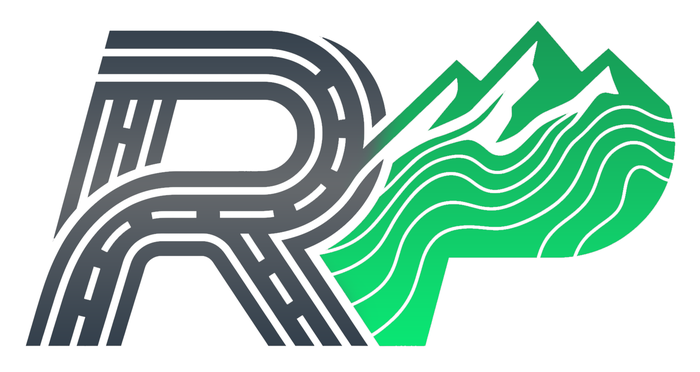

The page works and the targets are already 44px+. What it lacks is any of the site's
voice.
The gap is tone, not usability. The rest of the runner site is
editorial and loud — a 40px Archivo "Find your next start line", forest slabs, race photography,
condensed eyebrows. The sign-in is a plain centred stack that could belong to any product, and it
is often the FIRST screen a runner sees when a friend shares a race link and they hit register. It
should sound like the thing they are joining.
A · Editorial split — recommended

MINDANAO · 2026 SEASON
Your start line is waiting.
Sign in to claim a slot, carry your ticket offline, and keep every race you've run in one place.
20
RACES OPEN
2
ORGANIZERS
65K
LONGEST
Sign in
Enter races and carry your ticket to the start line.
Why this one. It uses the site's own voice — condensed eyebrow, heavy
Archivo display, forest canvas — so a runner arriving from a shared race link sees the same
product they were just looking at, not a generic form.
The contour lines are drawn from the existing TopoPattern component and
--forest, so there is no photography to source or licence and no new asset
to ship. That matters: a stock trail photo here would be the one image on the site that isn't a
real Mindanao race.
Google is first. Most runners arriving from a phone will not have a password yet, and
burying the one-tap option under a form they can't complete is a dead end. The counts at the
bottom are real data the site already loads for the home page.
On mobile the canvas collapses to a header band rather than disappearing, so the brand survives
the breakpoint instead of degrading to the plain form we have now.
Simplest to build and the same at every size — no split to reflow, no
breakpoint where the brand disappears. The card floating on the forest canvas reads as
deliberate and is unmistakably Race Pace.
What it gives up is the room A has for a sentence of persuasion. This page is often a runner's
first impression via a shared link, and "Sign in to claim a slot, carry your ticket offline"
does work that a bare form does not. Choose this if you would rather ship the smaller change.
C · Keep it minimal, add the voice
MINDANAO · 2026 SEASON
Sign in.
Enter races and carry your ticket to the start line.
The half-hour version. Same structure as today; the changes are an
Archivo display heading, a condensed eyebrow, Google promoted above the password form, and the
logo sized properly. It removes the "could be any product" feeling without any new layout.
Honest limitation: on a wide screen it is still a narrow column in a large empty page, which is
what A and B both solve.
Common to all three. Google first, since a runner arriving from a shared
race link most likely has no password yet; autocomplete="email" and
current-password so password managers fill correctly; errors rendered next to the
field rather than only at the top; the first invalid field focused on a failed submit; and the
existing 44px+ targets kept. None of them need a new image asset — the contours come from the
TopoPattern component the site already ships.